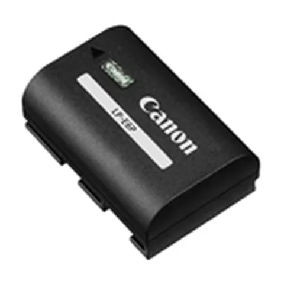
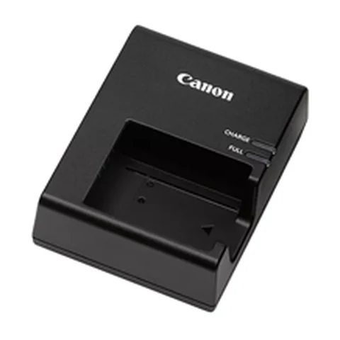
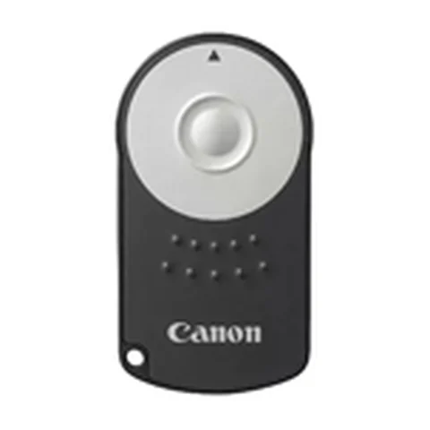
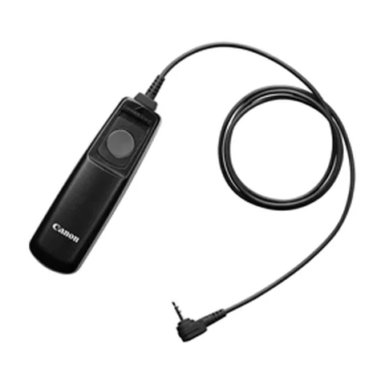
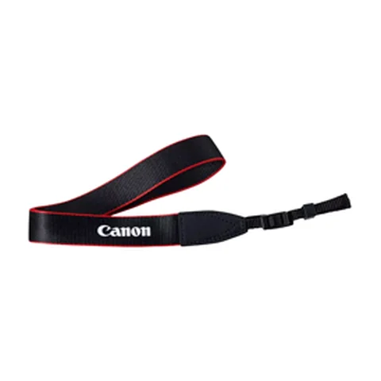
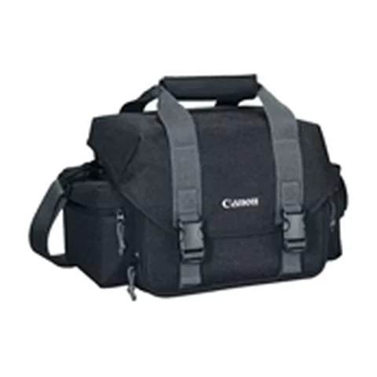
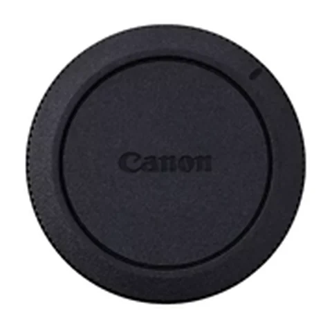
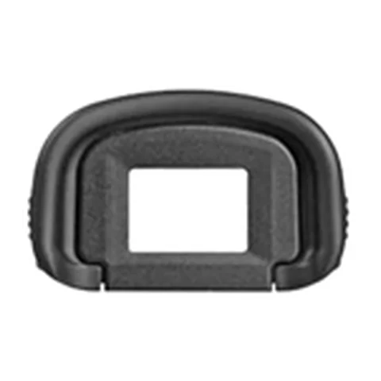
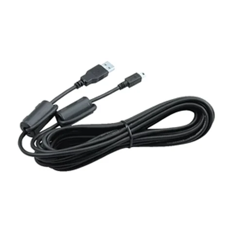

Acessórios originais Canon
Vendidos no balcão da Namba, na Rua da Consolação. Consulte a disponibilidade com a equipe e confirme se o item serve no modelo da sua câmera antes de ir.
Produtos
-
ACC·01Energia

Bateria recarregável
Bateria original de íon de lítio. O modelo muda conforme a câmera.
Consultar disponibilidade -
ACC·02Energia

Carregador de bateria
Carregador de tomada com luz que indica carga em andamento e carga completa.
Consultar disponibilidade -
ACC·03Controle remoto

Controle remoto sem fio
Dispara a câmera à distância. Bom para autorretratos e fotos em grupo.
Consultar disponibilidade -
ACC·04Controle remoto

Disparador remoto com fio
Dispara sem encostar na câmera, o que evita tremor em exposições longas.
Consultar disponibilidade -
ACC·05Transporte

Alça de pescoço
Alça original com o logotipo Canon, para levar a câmera no pescoço ou no ombro.
Consultar disponibilidade -
ACC·06Transporte

Bolsa para câmera
Bolsa acolchoada com divisórias para o corpo, objetivas e acessórios.
Consultar disponibilidade -
ACC·07Proteção

Tampa do corpo
Protege o sensor e o encaixe da câmera quando ela fica sem objetiva.
Consultar disponibilidade -
ACC·08Proteção

Ocular do visor
Peça de borracha que protege o visor e bloqueia a luz lateral ao fotografar.
Consultar disponibilidade -
ACC·09Conexão

Cabo USB de interface
Liga a câmera ao computador para transferir as fotos.
Consultar disponibilidade
Vitrine de demonstração. Imagens ilustrativas; preços, estoque e modelos compatíveis são informados pela equipe.
Como comprar
- Consulte
Chame a equipe no WhatsApp ou ligue para (11) 3259-7888 e pergunte pelo item.
- Confirme o modelo
Informe o modelo da sua câmera. Baterias, carregadores e controles mudam de uma linha para outra.
- Retire no balcão
Rua da Consolação, 331, 10º andar. Segunda a sexta, das 9h às 18h30.